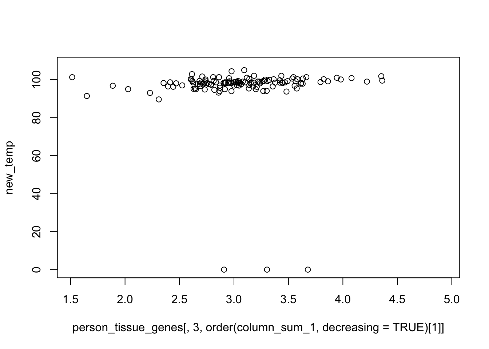

betahat_sebetahat <- get(load("../output/heat_cor_nonmash.rda"))
sample_attributes <- get(load("../output/sample_attributes_filtered.rda"))
person_tissue_genes <- get(load("../output/person_tissue_genes_voom.rda"))betahat_mat <- betahat_sebetahat$betahat
sebetahat_mat <- betahat_sebetahat$sebetahat
pval_mat <- betahat_sebetahat$pval
rsquare_mat <- betahat_sebetahat$rsquaretmat <- betahat_mat/sebetahat_mat
abs_tmat <- abs(tmat)
column_sum_1 <- apply(abs_tmat, 2, function(x) return(quantile(x, 0.7)))names <- dimnames(person_tissue_genes)[[3]][order(column_sum_1, decreasing = TRUE)[1:10]]
names## [1] "ENSG00000258056" "ENSG00000270681" "ENSG00000185340"
## [4] "ENSG00000173264" "ENSG00000218891" "ENSG00000180900"
## [7] "ENSG00000172922" "ENSG00000141858" "ENSG00000142544"
## [10] "ENSG00000095564"column_sum_1[order(column_sum_1, decreasing = TRUE)[1:10]]## [1] 3.682033 2.843821 2.829214 2.786210 2.763768 2.743008 2.736654
## [8] 2.720769 2.714820 2.700717temp_val <- sample_attributes$TRCRTMP
temp_val_unit <- sample_attributes$TRCRTMPU
temp_val_unit[329] <- "F"
which_celsius <- which(temp_val_unit == "C")
new_temp <- array(0, length(temp_val))
new_temp[which_celsius] <- (temp_val[which_celsius]*9)/5 + 32
new_temp[-which_celsius] <- temp_val[-which_celsius]tmat[,order(column_sum_1, decreasing = TRUE)[1]]## [1] -0.2793597 3.8707284 3.8246527 1.5121745 3.9624232 1.5890405
## [7] 1.3118747 2.0977722 2.1700347 2.9354218 5.2881584 5.6580590
## [13] 4.3814342 3.4157904 1.7273237 7.0078047 4.5734900 2.2035412
## [19] 1.1543565 3.8256557 3.0919807 0.2056272 2.8251495 1.7691542
## [25] 2.2411553 5.4038007 1.6217984 0.6730067 3.7247312 4.3553320
## [31] 2.2287148 3.6535673 2.2258752 2.2371511 4.7666998 2.6767517
## [37] 2.6641301 0.6137956 0.8743494 0.7844000 2.2826884 4.5164696
## [43] 5.2128990 2.3277399 0.3596543 1.4261493 1.2717818 4.5502297
## [49] 0.9722154 3.6316142 3.0092698 1.9828588 1.3193721plot(person_tissue_genes[,3, order(column_sum_1, decreasing = TRUE)[1]], new_temp)
HSF pathway
pathways <- read.delim("../utilities/CPDB_pathways_genes.tab")
pathway_names <- pathways[,1]
grep("HSF",pathway_names)## [1] 1816 1839 1945heat_pathways <- pathways[grep("HSF", pathway_names),]
heat_genes <- strsplit(as.character(heat_pathways[1,4]), "[,]")[[1]]
indices <- match(heat_genes, dimnames(person_tissue_genes)[[3]])
indices <- indices[!is.na(indices)]na_indices <- union(which(is.na(new_temp)), which(new_temp == 0))
person_tissue_genes_1 <- person_tissue_genes[-na_indices,,]
new_temp_1 <- new_temp[-na_indices]par(mfrow=c(2,2))
plot(log(new_temp_1), person_tissue_genes_1[,53, indices[1]], xlim=c(4.5, 4.7))
plot(log(new_temp_1), person_tissue_genes_1[,30, indices[1]], xlim=c(4.5, 4.7))
plot(log(new_temp_1), person_tissue_genes_1[,35, indices[1]], xlim=c(4.5, 4.7))
plot(log(new_temp_1), person_tissue_genes_1[,12, indices[1]], xlim=c(4.5, 4.7))This R Markdown site was created with workflowr